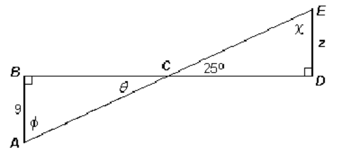
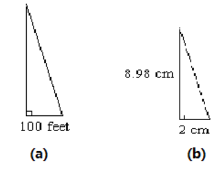
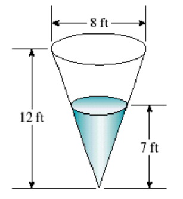
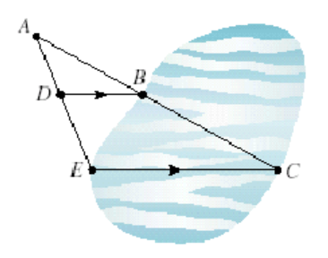

Example1.1
The two triangles below are congruent. List the corresponding parts, and find the angles \(\theta\text{,}\) \(\phi\text{,}\) and \(\chi\text{,}\) and side \(z\text{.}\)

Two triangles are congruent if they have exactly the same size and shape. This means that their corresponding angles are equal, and their corresponding sides have the same lengths, as shown below.
The two triangles below are congruent. List the corresponding parts, and find the angles \(\theta\text{,}\) \(\phi\text{,}\) and \(\chi\text{,}\) and side \(z\text{.}\)
The two triangles at right are congruent. Find the values of \(\alpha\text{,}\) \(\beta\text{,}\) and \(\gamma\text{.}\)
Recall that the altitude of a triangle is the segment from one vertex of the triangle perpendicular to the opposite side.
Show that the altitude of an equilateral triangle divides it into two congruent right triangles.
The triangles in the previous example are a special type of right triangle called \(30\degree\)–\(60\degree\)–\(90\degree\) triangles. Notice that in these triangles, the leg opposite the \(30\degree\) angle is half the length of the hypotenuse.
The diagonal of a parallelogram divides it into two congruent triangles, as shown at right. List the corresponding parts of the two triangles, and explain why each pair is equal.
Two triangles are similar if they have the same shape but not necessarily the same size. The corresponding angles are equal, and the corresponding sides are proportional. We can think of one similar triangle as an enlargement or a reduction of the other. (See the figures below.)
To decide whether two triangles are similar, it turns out that we need to verify only one of the two conditions for similarity, and the other condition will be true automatically.
Two triangles are similar if either
Which of the pairs of triangles shown below are similar?
Are the triangles below similar? Explain why or why not in each case.
In the previous exercise, note that the third angle in each triangle must be \(80\degree\text{,}\) because the sum of the angles is \(180\degree\text{.}\) Thus, we need only show that two pairs of angles are equal to show that two triangles are similar.
The figure in the next example shows a parallelogram \(ABCD\) and two triangles, \(\triangle ABE\) and \(\triangle FCE\text{.}\) Can we find the unknown lengths \(x\) and \(y\) in the larger triangle?
First note that two pairs of corresponding angles in the triangles are equal: \(\angle BEA\) and \(\angle FEC\) are vertical angles, and \(\angle EFC\) and \(\angle BAE\) are alternate interior angles. But if two pairs of corresponding angles are equal, then the third pair must be equal also. This means that the two triangles are similar, and we can use the fact that their corresponding sides are proportional to find \(x\) and \(y\text{.}\)
Find the value of \(x\) in the figure at right.
Remember that“cross-multiplying”is a short-cut technique for solving proportions. It does not work for other operations involving fractions.
Find the value of \(y\) in the previous example.
If two right triangles have one pair of corresponding acute angles with the same measure, then the triangles are similar. We can use this fact about right triangles to make indirect measurements.
Delbert would like to know the height of a certain building. He gets Francine to hold up a 5-foot pole near the building and measures the length of its shadow. The shadow of the pole is 3 feet long, and the shadow of the building is 12 feet long.
Earlier we created a 30°-60°-90° triangle in which the shorter leg was 4 inches and the hypotenuse was 8 inches. The hypotenuse of another 30°-60°-90° triangle is 5 feet. What is the length of the side opposite the 30° angle?
In some applications, similar triangles may share a side or an angle.
Identify two similar triangles in the figure at right, and write a proportion to find \(H\text{.}\)
Heather wants to know the height of a street lamp. She discovers that when she is 12 feet from the lamp, her shadow is 6 feet long. Find the height of the street lamp.
Which of the following expressions and equations are proportions?
\(\dfrac{7}{x}=\dfrac{3}{5}\)
\(\dfrac{x}{2}=\dfrac{8}{x+2}\)
\(1+\dfrac{x}{4}=\dfrac{2x}{3}\)
\(\dfrac{6}{x}+\dfrac{x}{5}\)
\(\dfrac{3}{x+1}\cdot\dfrac{2x}{5}\)
\(\dfrac{1}{x}+\dfrac{2}{3x}=\dfrac{x-2}{2}\)
Solve each equation. Begin by writing an equivalent equation without fractions: multiply both sides by the LCD.
\(\dfrac{x}{12}=\dfrac{3}{x}\)
\(1+\dfrac{x}{2}=\dfrac{2x}{5}\)
Only 1 and 2 are proportions.
7. \(\pm 6\)
8. \(-10\)
Look up the definitions of new terms in the Glossary.
Two triangles are similar if either
Practice each skill in the Homework Problems listed.
In Problems 1–4, name two congruent triangles and find the unknown quantities.
\(PQRS\) is an isosceles trapezoid.
\(\triangle PRU\) is isosceles.
\(\triangle PRU\) is isosceles and \(OR=NG\text{.}\) Find \(\angle RNG\) and \(\angle RNO\text{.}\)
Delbert and Francine want to measure the distance across a stream. They mark point \(A\) directly across the stream from a tree at point \(T\) on the opposite bank. Delbert walks from point \(A\) down the bank a short distance to point \(B\) and sights the tree. He measures the angle between his line of sight and the streambank.
If you have a baseball cap, here is another way to measure the distance across a river. Stand at point \(A\) directly across the river from a convenient landmark, say a large rock, on the other side. Tilt your head down so that the brim of the cap points directly at the base of the rock, \(R\text{.}\)
For Problems 7–10, decide whether the triangles are similar, and explain why or why not.
Assume the triangles in Problems 11–14 are similar. Solve for the variables. (Figures are not drawn to scale.)
In Problems 15–20, use properties of similar triangles to solve for the variable.
For Problems 21–26, use properties of similar triangles to solve.
A rock climber estimates the height of a cliff she plans to scale as follows. She places a mirror on the ground so that she can just see the top of the cliff in the mirror while she stands straight.
The angles 1 and 2 formed by the light rays are equal, as shown in the figure. She then measures the distance to the mirror (2 feet) and the distance from the mirror to the base of the cliff (56 feet). If she is 5 feet 6 inches tall, how high is the cliff?
Edo estimates the height of the Washington Monument as follows. He notices that he can see the reflection of the top of the monument in the reflecting pool. He is feet from the tip of the reflection, and that point is 1080 yards from the base of the monument, as shown below. From his physics class Edo knows that the angles marked and are equal. If Edo is 6 feet tall, what is his estimate for the height of the Washington Monument?
In the sixth century BC, the Greek philosopher and mathematician Thales used similar triangles to measure the distance to a ship at sea. Two observers on the shore at points \(A\) and \(B\) would sight the ship and measure the angles formed, as shown in figure (a). They would then construct a similar triangle as shown in figure (b), with the same angles at \(A\) and \(B\text{,}\) and measure its sides. (This method is called triangulation.) Use the lengths given in the figures to find the distance from observer to the ship.
The Capilano Suspension Bridge is a footbridge that spans a 230-foot gorge north of Vancouver, British Columbia. Before crossing the bridge, you decide to estimate its length.
You walk 100 feet downstream from the bridge and sight its far end, noting the angle formed by your line of sight, as shown in figure (a). You then construct a similar right triangle with a two-centimeter base, as shown in figure (b). You find that the height of your triangle is 8.98 centimeters. How long is the Capilano Suspension Bridge?

A conical tank is 12 feet deep and the diameter of the top is 8 feet. If the tank is filled with water to a depth of 7 feet as shown in the figure at right, what is the area of the exposed surface of the water?

To measure the distance \(EC\) across the lake shown in the figure at right, stand at \(A\) and sight point \(C\) across the lake, then mark point \(B\text{.}\) Then sight to point \(E\) and mark point \(D\) so that \(DB\) is parallel to \(EC\text{.}\) If \(AD = 25\) yards, \(AE = 60\) yards, and \(BD = 30\) yards, how wide is the lake?

In Problems 27–28, the pairs of triangles are similar. Solve for \(y\) in terms of \(x\text{.}\) (The figures are not drawn to scale.)
For Problems 29–34, use properties of similar triangles to solve for the variable.
In Problems 35–38,solve for \(y\) in terms of \(x\text{.}\)
Triangle \(ABC\) is a right triangle, and \(AD\) meets the hypotenuse \(BC\) at a right angle.
Here is a way to find the distance across a gorge using a carpenter's square and a five-foot pole. Plant the pole vertically on one side of the gorge at point \(A\) and place the angle of the carpenter's square on top of the pole at point \(B\text{,}\) as shown in the figure. Sight along one side of the square so that it points to the opposite side of the gorge at point \(P\text{.}\) Without moving the square, sight along the other side and mark point \(Q\text{.}\) If the distance from \(Q\) to \(A\) is six inches, calculate the width of the gorge. Explain your method.